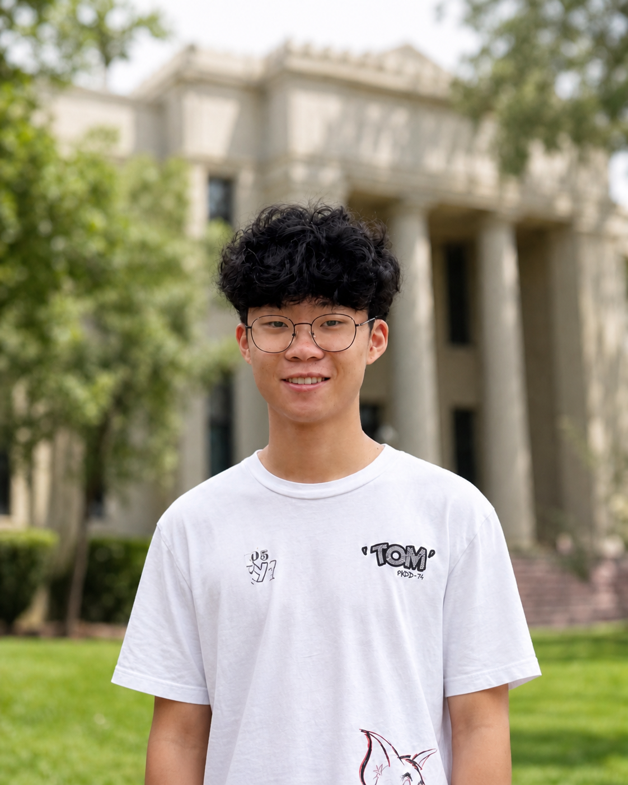

I’m a rising senior at Los Gatos High School in California, interested in mathematics, physics, and machine learning.

I’m a high-school student interested in the intersection of mathematics, physics, and machine learning. I take college mathematics through concurrent enrollment, compete in mathematics and physics olympiads, and teach. I founded the Los Gatos Math Circle and run a YouTube channel that explains olympiad mathematics through animation.
Cofinite Zeros of High Derivatives. Independent research, 2026. Constructed a transcendental entire function whose sufficiently high derivatives have a zero in every prescribed nonempty open subset of the complex plane. PDF · Lean formalization
Approximation-Free Diffusion Posterior Sampling. Stanford University, 2026-present. Working with a Stanford professor and Ph.D. student on approximation-free diffusion posterior sampling for scientific inverse problems. Applied the method to InverseBench tasks including linear inverse scattering, the Navier-Stokes equations, and full-waveform inversion.
Co-Founder, Rooxts. 2025-present. Built a VC-backed social application to foster genuine friendships; scaled to early adopters and secured funding at a $100K valuation.
Creator, Mathematics YouTube Channel. 2024-present. Produce animated explanations of olympiad mathematics using Manim, reaching thousands of students worldwide.
Lead Organizer, Los Gatos Hacks. 2023-present. Lead organizer of one of the largest in-person high school hackathons on the West Coast, an annual 200+ participant event. Secured sponsorships and partnerships, managed venue logistics and operations, built the event website and backend, and created opportunities for students from underrepresented communities to engage with STEM and entrepreneurship.
Founder & Instructor, Los Gatos Math Circle. 2022-present. Founded a weekly proof-based math circle for 20+ students; led advanced problem-solving sessions, organized local competitions, and trained teams for regional and collegiate tournaments.
Los Gatos High School. 2023-present. GPA: 4.0 unweighted / 4.6 weighted.
West Valley College (concurrent enrollment). 2025-present. Multivariable calculus, differential equations, and linear algebra.
Python (NumPy, SciPy, PyTorch, TensorFlow), MATLAB, LaTeX. Data analysis, linear algebra, topology.